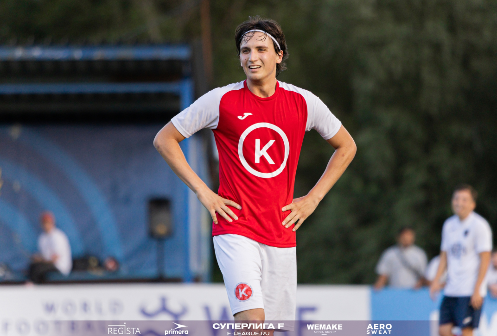
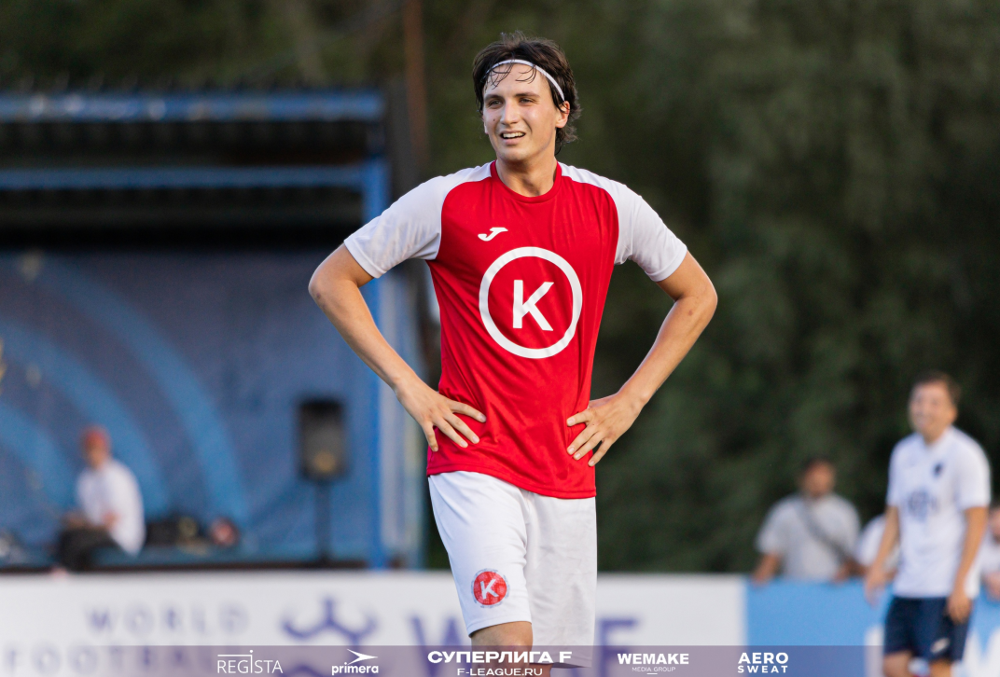

Кокос Групп
Любительский
футбольный клуб
История
клуба
 



ФК "Кокос Групп" - это не просто футбольный клуб, это история борьбы, преданности и стремления к вершинам. Наш клуб родился из самого сердца футбольной любви и страсти, и с тех пор прошел невероятный путь. 1995 год. В небольшом городке, окутанном футбольным дыханием, группа единомышленников объединилась с мечтой о создании команды, способной не только играть красиво, но и побеждать. Так и появился ФК "Кокос Групп". Название клуба не было случайным - оно символизировало прочность, стойкость и стремление к новым высотам, как кокос, пробивающийся сквозь твердую скорлупу. Первые шаги были непростыми. Отсутствие финансирования, скромные условия тренировок, но это не сломило дух наших первых игроков. Они тренировались с утра до вечера, играли на любых полях, чтобы доказать себе и миру: ФК "Кокос Групп" - это команда, которая идет к своей цели, несмотря ни на что. 2000 год. Наш первый крупный успех! ФК "Кокос Групп" выигрывает региональный чемпионат, став настоящим открытием сезона. Эта победа стала не только триумфом на поле, но и доказательством того, что упорство и трудолюбие могут творить чудеса.